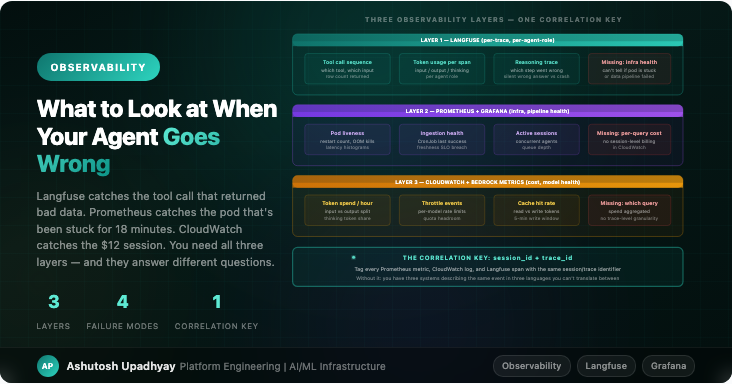

ObservabilityLangfuse is great for tracing what the agent did. It can't tell you why the pod was liveness-killed mid-request, why the ingestion job silently produced zero rows, or which session cost $12. Here's how three layers work together — and where each one falls short alone.
A user reported that the agent had "given a wrong answer" about a protein interaction. I opened Langfuse, found the trace, and saw that the tool call had returned results — rows came back, the reasoning looked coherent, the final answer was plausible. Nothing in the trace looked wrong.
The actual problem was in Prometheus. The ingestion pod for that data source had been OOM-killed the night before, mid-write. The CronJob had run, the job had reported success (it died after the checkpoint that marks success, but before finishing the write), and the manifest had been written claiming a complete dataset. The manifest was lying. The Parquet file had 40,000 rows instead of the expected 400,000. The agent had queried 10% of the data and given an answer based on a biased sample, because Langfuse traces don't tell you about the state of the data warehouse your tools are querying.
I had Langfuse, and it was useless for this incident. I didn't yet have Prometheus metrics on ingestion job outcomes. I found the problem by manually checking the CronJob pod logs — which meant I found it two days after the fact, not at the time of the wrong answer.
That incident reshaped how I think about observability for agent systems.
An agent system has more failure surfaces than a conventional service, and they require different observation tools. A wrong answer can come from the model reasoning incorrectly, from a tool returning bad data, from an infrastructure problem that corrupted or degraded the tool's data source, or from a cost/throughput issue that caused the model to truncate its response. These four failure modes look different in each observability layer.
Langfuse is where I start for any "the agent gave a wrong answer" report. It captures the full tool call sequence, token counts per span, and the reasoning trace — enough to distinguish "the model went down a wrong path" from "the tool returned bad data" from "the reasoning was cut off."
The most valuable thing it showed me early on was the difference between two classes of wrong answer that look identical to the user:
In Langfuse you can see the row count in the tool return. That single number changed how I debug. If the row count is low, I stop looking at the trace and go to Prometheus. If the row count is normal and the reasoning is wrong, I look at which skills were loaded and whether the model applied them correctly.
What Langfuse cannot tell you: whether the pod is healthy, whether the ingestion job ran, whether the S3 write completed, or what anything cost at the Bedrock API level. It's a model-behavior layer. Everything below the model is invisible to it.
I added two categories of custom metrics after the OOM incident, and I wish I'd had them from the start.
Ingestion health metrics:
# Pushed to Pushgateway at end of each CronJob run
# (CronJob pods exit after completion and cannot be scraped directly)
ingestion_last_success_timestamp{source="string"} → Unix timestamp
ingestion_row_count{source="string"} → count of rows written
ingestion_duration_seconds{source="string"} → job duration
# Alert rule: source is stale
alert: IngestionStale
expr: time() - ingestion_last_success_timestamp > 86400 # 24h
labels:
severity: warningThese fire before a user discovers stale data in a query. The alert lands in Slack 24 hours after a missed ingestion, not two days later when someone reports a suspicious answer.
The row count metric caught something more subtle: a source that started returning half its normal rows due to an upstream API change. The CronJob succeeded, the manifest looked correct, but the row count had dropped 50% over three weeks. A user would eventually have noticed the answers were incomplete, but the metric caught it first.
Pod health metrics:
Standard Kubernetes metrics from kube-state-metrics, but with one addition: I track request duration specifically for agent endpoints, not just HTTP latency. A FastAPI endpoint running a long agentic loop will have request durations in the minutes. Standard latency SLOs will fire false positives constantly unless you separate "agent query" latency from "API call" latency in the metric labels.
The pod restart trap: a pod that restarts every few hours looks healthy in Prometheus if you're only watching kube_pod_status_ready. It's ready most of the time. What it's doing is getting liveness-killed mid-request, recovering, serving the next request normally, and then getting killed again. The metric you need is kube_pod_container_status_restarts_total with a rate over a window that covers your request duration. If restarts per hour is greater than zero during business hours, something is killing in-flight requests and users are seeing unexplained failures.
Bedrock emits invocation metrics to CloudWatch automatically: token counts, latency, throttle events, cache hit/miss. I added a Grafana dashboard panel for these early on and it paid off within two weeks.
The first thing it caught was a query pattern I hadn't anticipated: some users were asking the agent to "analyze everything" — which triggered my agent to call every tool in sequence, accumulating a context window across 34 tool results before generating a response. The token count for these queries was 10-15x the median. They weren't errors — they completed successfully — but they were causing occasional throttling for other users because they consumed a significant share of the per-minute token quota.
Without the CloudWatch metrics, I'd have known there was intermittent throttling but not which query pattern was causing it. With them, I could see the spike in input tokens immediately before each throttle event.
The second thing: cache hit rates. I had prompt caching configured but wasn't sure it was actually working. The CloudWatch cache read token metric made it visible. When the static system prompt was longer than the minimum size for cache eligibility, the cache hit rate was around 70%. When I reorganized the system prompt to put the static portion first (caching requires the cacheable portion to be at a fixed prefix position), it jumped to 85%. That's a real cost difference across thousands of queries.
The attribution gap: CloudWatch aggregates Bedrock spend by model, not by session or user. You can see "Opus 5 spent 2.4M input tokens this hour" but not "session X cost $12 because the user asked it to analyze everything." To get per-session cost attribution, you have to log token counts per query yourself (Langfuse gives you these per-span) and join them against the Bedrock billing granularity offline. There is no built-in path from "which Langfuse trace was expensive" to "how much did it cost" — you build that join yourself.
The most important design decision in a multi-layer observability stack is the correlation key — the identifier that ties together a Langfuse trace, a Prometheus metric, and a CloudWatch log for the same event.
I got this wrong initially. Langfuse uses trace IDs. My Prometheus metrics used user IDs as labels. My FastAPI logs used session IDs. These were three different identifiers, none of which appeared in each other's system. When I was debugging the OOM-corrupted data incident, I had to manually correlate timestamps across three systems to figure out that the failed CronJob and the bad trace had happened within the same two-hour window. That's a slow, error-prone process.
The fix is straightforward but requires threading the same identifier through every layer from the start:
# Set once at request entry point
request_id = str(uuid4()) # or use the Langfuse trace ID directly
# Langfuse — set as trace metadata (SDK v3+)
langfuse.update_current_trace(session_id=session_id, user_id=user_id)
# Prometheus — add as label (keep cardinality low — use session, not request)
agent_query_duration_seconds.labels(
agent_role="data_scout",
session_id=session_id[:8] # truncate for cardinality
).observe(duration)
# Structured logs — add to every log line
logger.info("tool_call_complete", extra={
"trace_id": trace_id,
"session_id": session_id,
"tool": tool_name,
"row_count": len(result)
})With consistent IDs threaded through, correlating a Langfuse trace with Prometheus metrics and CloudWatch logs takes seconds instead of minutes. More importantly, it enables the query you actually want during an incident: "show me all observability data for session X."
| Failure mode | Langfuse catches? | Prometheus catches? | CloudWatch catches? |
|---|---|---|---|
| Model went down wrong reasoning path | Yes — trace shows it | No | No |
| Tool returned bad data | Partially — row count visible | Yes — if you metric row counts | No |
| Ingestion job silently truncated | No | Yes — if you alert on row counts | No |
| Pod liveness-killed mid-request | No — trace ends abruptly | Yes — restart counter | No |
| Thinking tokens exhausted budget | Yes — stop_reason visible | No | Yes — token spike |
| Throttling from one expensive query | Partially — high token count visible | Partially — latency spike | Yes — throttle events |
| Prompt cache not actually working | No | No | Yes — cache read tokens |
| Skills S3 object stale | No | No — if you don't add it | No |
The last row is worth calling out. Skills staleness — the case where the Python file was updated but the S3 object wasn't — shows up in none of the three default observability layers. The agent behaves subtly differently, the trace looks normal, and there's no infrastructure signal. The only detection is explicit: either you add a metric that tracks the last S3 write time for each skill object, or you catch it in a user report.
If I were starting fresh, these are the five things I'd instrument before shipping to users — not as an afterthought:
stop_reason is max_tokens instead of end_turn, the answer was cut off. Users don't always notice truncated answers. This metric catches a whole class of silent failures.The thing I underestimated at the start was how different "the agent gave a wrong answer" is from a conventional service failure. In a conventional service, wrong output usually comes from a code bug — a reproducible condition you can find and fix. In an agent, wrong output comes from a combination of model state, context window contents, tool data quality, and infrastructure health — and the same query might produce different answers on different runs depending on which of those factors is in a different state.
That means observability for agents isn't a nice-to-have for production readiness — it's the mechanism by which you can distinguish between these failure modes at all. Without traces, you can't tell if the model reasoned wrong. Without infrastructure metrics, you can't tell if the data was wrong. Without cost metrics, you can't tell if you're spending ten times more than expected on a pattern you didn't design for.
Each layer answers different questions. All three are necessary. The correlation key ties them together into something you can actually use at 2am when a user has flagged a suspicious answer and you need to figure out which of the four failure modes just happened.
max_tokens means the answer was truncated — a silent failure users often miss.